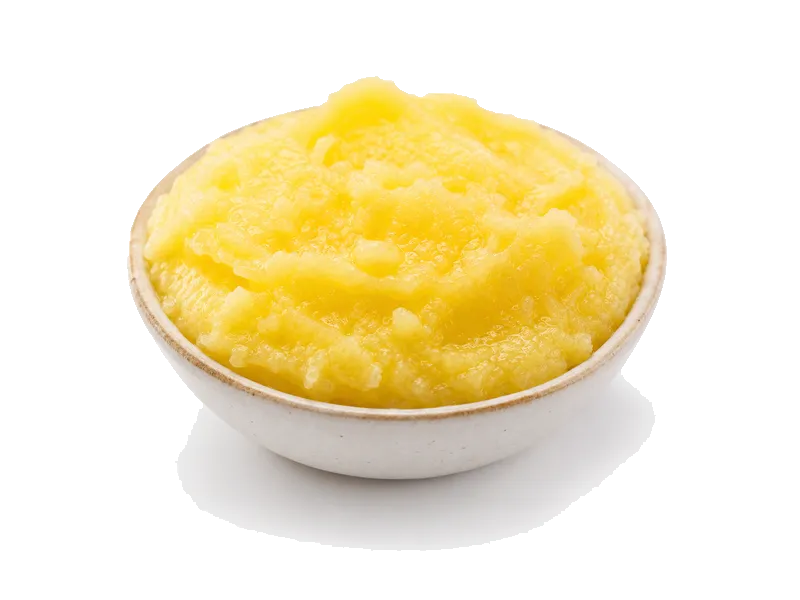

Tłuszcze i oleje
Masło klarowane (ghee)
Masło klarowane (ghee): 0 g białka, 900 kcal, 0 g węglowodanów i 100 g tłuszczu na 100 g. Kategoria: Tłuszcze i oleje.
Kalorie900 kcalna 100 g
Białko / proteiny0 g
Węglowodany0 g
Tłuszcz100 g
Cena (szac.)~3,00 złza 100 g
Ceny zaktualizowano: maj 2026 (szacunek — ceny w popularnych supermarketach)
Porcja: łyżka (10g)
| Kalorie | 90 kcal |
|---|---|
| Białko | 0 g |
| Węglowodany | 0 g |
| Tłuszcz | 10 g |
| Cena (szac.) | ~0,30 zł |
Szczegółowe składniki odżywcze na 100 g
| Wartość energetyczna (kalorie) | 900 kcal |
|---|---|
| Białko (proteiny) | 0 g |
| Węglowodany | 0 g |
| Tłuszcz | 100 g |
| Tłuszcze nasycone | 63 g |
| Tłuszcze nienasycone | 37 g |
| Witaminy i minerały (skrót) | Witamina A, Witamina E, Witamina K |
| Współczynnik kcal / 1 g białka | — |
| Cena produktu (szac. za 100 g) | ~3,00 zł |
Witaminy i minerały na 100 g
Ilość w 100 g produktu oraz orientacyjny % dziennego zapotrzebowania (RDA) dla dorosłej osoby. Żelazo wg normy dla kobiet; sód jako % limitu. Wartości typowe (USDA / tabele żywieniowe / etykiety) — mogą się różnić między markami.
-
Witamina A 684 µg
-
Witamina D 0.5 µg
-
Witamina E 2.3 mg
-
Witamina K 7 µg